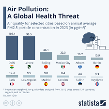
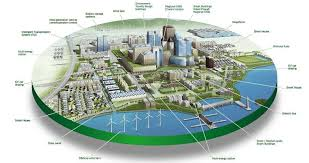

Dive deeper into the AI, materials, and vision behind our project.
Our system uses machine learning to analyze sensor data, detect pollution spikes, and predict future air quality trends. This helps communities prepare and respond faster.
Air pollution is one of the biggest threats to health worldwide. By monitoring and sharing data, our project contributes to cleaner cities and healthier lives.
Kaga Air Monitoring aims to expand into smart city networks, integrate with mobile apps, and provide real-time dashboards for governments and citizens.
Developed and maintained by The Kaga Team
📧 Email: kagaairmonitoring@gmail.com